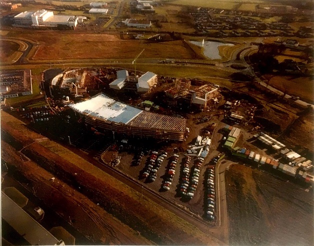

History of ITB
ITB was founded in 1999 and it is the last Institute of Technology built, making it the youngest out of all IT colleges. When it started out, it had only one building and a very basic website. The college slowly expanded due to numbers of students coming to study. The college changed its website a few times to follow the trends on the time, but the logo stayed pretty much the same throughout the years. It changed in 2009 and been the same since.
